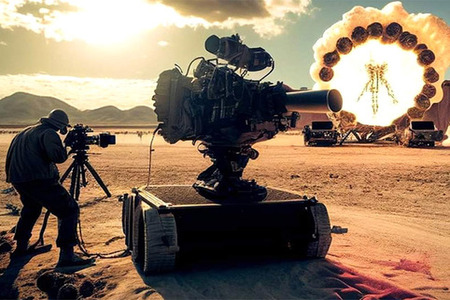
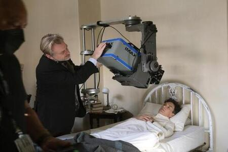

Welcome to the Nolan Movie Page!
Memento(film): Memento is a 2000 American neo-noir mystery psychological thriller film written and directed by Christopher Nolan, based on the short story "Memento Mori" by his brother Jonathan Nolan, which was later published in 2001.
Memento
The Dark Knight: The Dark Knight is a 2008 superhero film directed by Christopher Nolan from a screenplay co-written with his brother Jonathan. Based on the DC Comics superhero Batman, it is the sequel to Batman Begins (2005) and the second installment in The Dark Knight Trilogy.
The Dark Knight
Dunkirk: Dunkirk is a 2017 epic historical war thriller film written, directed and co-produced by Christopher Nolan that depicts the Dunkirk evacuation of World War II from the perspectives of the land, sea and air.
Dunkirk
Oppenheimer
Oppenheimer is a 2023 epic biographical thriller film[a] written, directed, and co-produced by Christopher Nolan, starring Cillian Murphy as J. Robert Oppenheimer, the American theoretical physicist credited with being the "father of the atomic bomb" for his role in the Manhattan Project—the World War II undertaking that developed the first nuclear weapons. Based on the 2005 biography American Prometheus by Kai Bird and Martin J. Sherwin, the film chronicles the career of J. Robert Oppenheimer, with the story predominantly focusing on his studies, his direction of the Manhattan Project during World War II, and his eventual fall from grace due to his 1954 security hearing. The film also stars Emily Blunt as Oppenheimer's wife "Kitty", Matt Damon as head of the Manhattan Project Leslie Groves, Robert Downey Jr. as United States Atomic Energy Commission member Lewis Strauss, and Florence Pugh as Oppenheimer's communist lover Jean Tatlock. The ensemble supporting cast includes Josh Hartnett, Casey Affleck, Rami Malek, and Kenneth Branagh.

